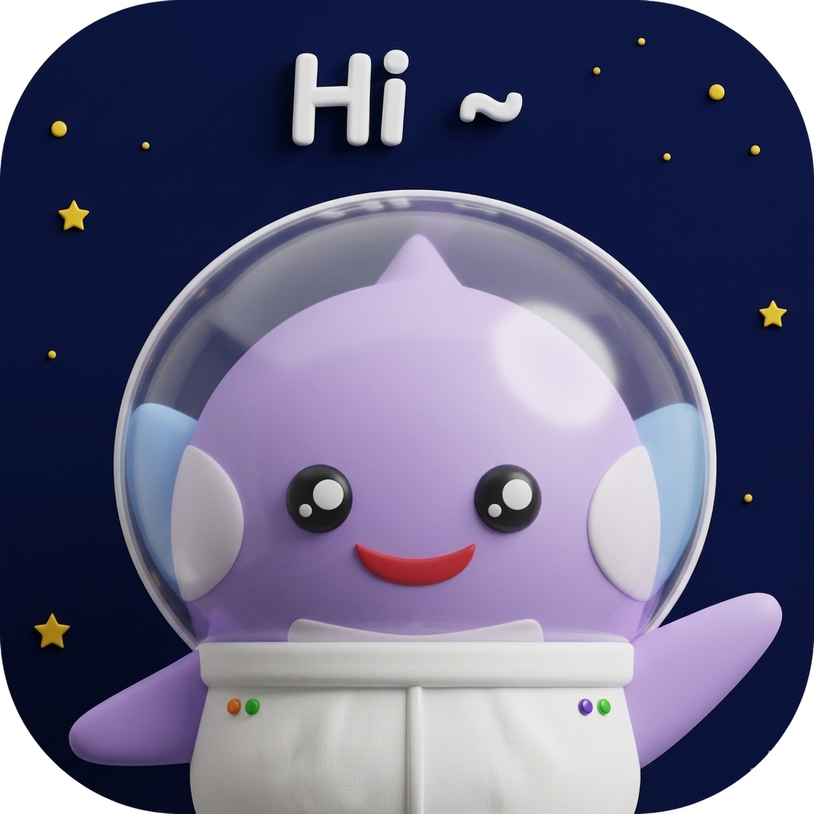

하루 중 시나리오를 선택하세요
비서 설정 완료 사용자
9:41
4월 9일 수요일

좋은 아침이에요! 오전 브리핑 도착 📋
오늘 일정 3건, 마감 업무 2건, 퇴근 후 변경 10건을 정리했어요.
탭하여 브리핑 확인
신주경님, 안녕하세요.
매일 아침 오늘의 일정과 업무를 브리핑하고,
회의 전 필요한 자료를 미리 준비해드려요.
퇴근 전엔 하루를 정리해서 알려드립니다.
오전 브리핑
출근 시 일정·업무·변경사항 요약
일정 브리핑
회의 전 참석자·안건·자료 준비
퇴근 브리핑
하루 업무 정리 및 내일 준비
브리핑 리포트
알림 설정
AI 비서가 알려줄 항목과 시간을 설정하세요.
오전 브리핑
출근 시 일정·업무·변경사항 요약
07:30부터 일정·업무·변경사항을 수집해요
일정 브리핑
일정 시작 전 참석자·안건·자료 브리핑
퇴근 브리핑
하루 업무 정리 및 내일 준비 브리핑
퇴근 시점의 업무 현황·내일 일정을 수집해서 브리핑해드려요
방해금지 모드
모든 AI 비서 알림을 일시 중지
AI 비서 설정
AI 캐릭터
플로키
따뜻하고 다정한 AI 파트너
비서 스타일